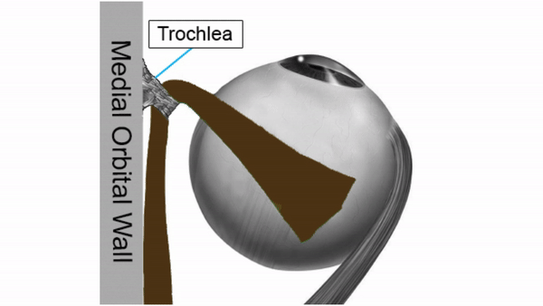

( of )
Correct: 0
Incorrect: 0
A 57 year old man reports episodes of vertical diplopia that have become much more frequent within the past few months. Your examination shows a left hypertropia that increases on right gaze and disappears on left gaze. In right gaze, the hypertropia is greater in the upgaze position than in the downgaze position. The left hypertropia is also greater on left head tilt than on right head tilt. Double Maddox Rod testing shows 5 degrees of excyclodeviation.

This misalignment pattern is caused by a lesion in the
Correct!
It should not surprise you that the efficiency of its pulling power would decline as the years go by! Sometimes the diplopia in this condition can be palliated with a spectacle prism. But because of the incomitance, the prism is usually an imperfect or temporary solution, and eye muscle surgery is the answer. Fortunately, a minor procedure (weakening of the inferior oblique muscle) is likely to provide relief of diplopia. All other causes of “fourth nerve palsy,” including trauma, tumor, and inflammation, would cause a hypertropia that is greater in downgaze than in upgaze. If you selected “neuromuscular junction” as your choice, you could hardly be faulted here, because myasthenia gravis can produce any pattern of ocular misalignment. In fact, the intermittency of the diplopia is likely to send you toward that diagnosis. However, the excyclodeviation favors a decompensating superior oblique muscle.

The pattern of ocular misalignment fulfills all the requirements of a “fourth nerve palsy.” But the fact that the hypertropia in left gaze is greater when the patient is looking up that when he is looking down is critical to localizing the lesion: it must lie in the muscle (or its tendon).
How this happens is not perfectly resolved. But consider that the anatomy of the superior oblique muscle and its tendon is awkward: the muscle lies along the medial orbital wall, passes through a sleeve of dura called the trochea, and must turn more than 90 degrees to insert onto the top of the eye.
Incorrect
Incorrect
Incorrect